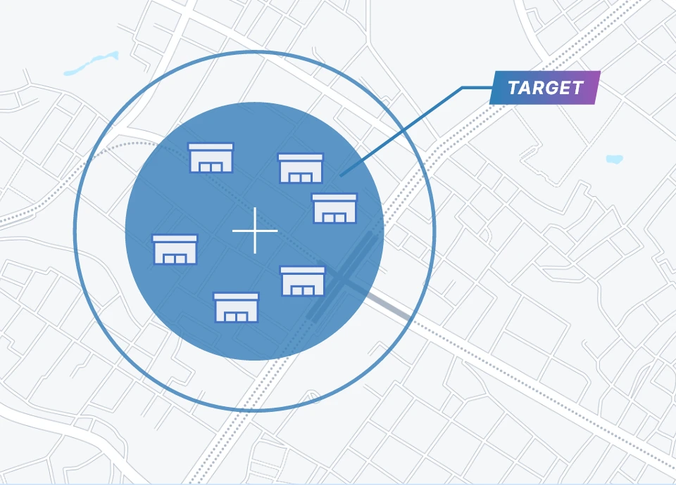

希望する地域と店舗を確認
商品を届けたい地域を伺い、対象エリアにある設置店舗から配信先を検討します。

広告主・メーカーの方から、対象商品、地域、時期を伺います。設置店舗の状況を確認し、配信条件を整理します。
商品を届けたい地域を伺い、対象エリアにある設置店舗から配信先を検討します。

購入した商品を袋へ詰める場所で、来店客に広告を表示します。
配信期間と素材を確認し、入稿条件を満たした広告を指定店舗で配信します。
広告代理店の方には、提案前の配信相談、入稿条件の確認、配信後の実施内容の共有まで対応します。
対象商品と希望地域を伺い、提案に必要な配信条件を整理します。
入稿する素材の形式や表現上の注意事項、確認日程をお伝えします。
どの店舗で、いつ配信したかを、実施内容としてまとめます。
小売店の方とは、設置場所、既存サイネージの利用可否、広告と店舗情報の配信方法を確認します。
既存サイネージを使えるか、どこに設置するか、広告と店舗情報をどの割合で配信するかを確認します。
対象地域や時期が固まっていない段階でもお問い合わせいただけます。
対象商品、届けたい来店客、地域、時期、予算を確認します。
設置状況を確認し、配信店舗、期間、条件と見積もりをご案内します。
入稿された広告素材を確認し、決定した店舗で配信を始めます。
スーパーで会計を終えたあと、購入した商品を袋へ詰める場所に設置したデジタルサイネージへ表示します。
希望する地域、店舗、期間を伺います。設置状況や配信枠を確認したうえで、配信可能な条件をご案内します。
ご相談いただけます。商品と実施時期を伺い、必要な素材の仕様や入稿までの進め方をお伝えします。
利用方法は店舗ごとに確認します。広告と店舗情報をどのように配信するか、設置・運用方法とあわせて相談します。